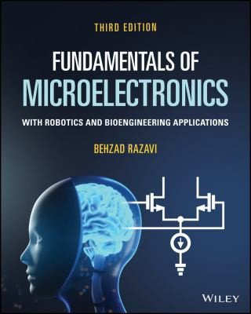
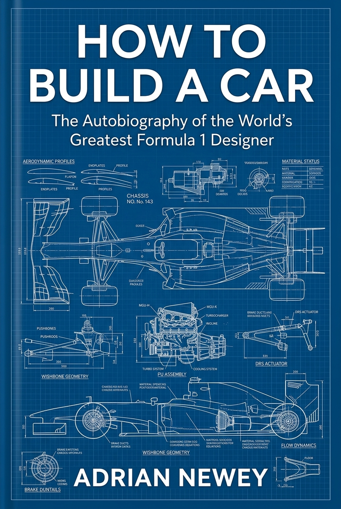
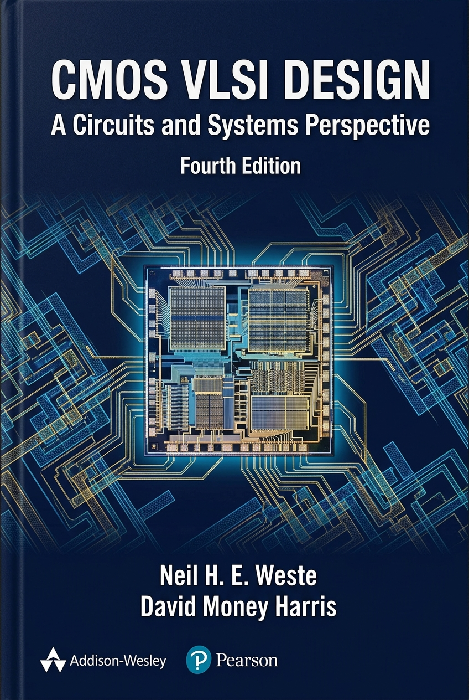
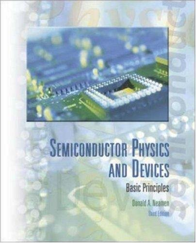
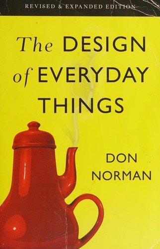

The Bridge Between Atoms and Systems.
I’m an electrical engineer connecting semiconductor device physics with compact modeling, mixed-signal circuits, and hardware. I’m pursuing my MSE in Electrical Engineering at the University of Pennsylvania, expected May 2027.
Previously at LBNL, Silicon Laboratories, and Cadence. My work spans CNT-FET transport, 21 mixed-signal evaluation boards, and device-level simulation.
Selected Work
Device physics, circuit design, and hands-on engineering.
The foundational layer: understanding and simulating the electron.
Modelling AlScN-based FE-FETs in Synopsys Sentaurus TCAD, replacing standard gate oxides with ferroelectric stacks to match real-life wafer configurations. Characterizing cylindrical AlScN ferroelectric memory arrays using Keithley SCS-4200.
Modelled planar 2D SOI-FET and 3D 14nm FinFET, achieving 3% performance improvement over baseline. Awarded "Research Grade: Excellent" at OUR Conference.
The physical layer: translating theoretical models into manufacturable silicon.
Fabricated freestanding MEMS structures using photolithography, DRIE, and wet etching. Characterized via SEM, AFM, TEM, and profilometry.
Architected a fully decoupled, mode-split MEMS gyroscope on 5 μm SOI DRIE. Engineered 100 Hz frequency split, Poly-Si anchor plugs, and active electrostatic spring tuning.
Block copolymer nanopatterning beyond photolithographic resolution limits. Developing DSA process flows for sub-20nm features.
Developing process flows for GFET fabrication using CVD-grown graphene transferred onto SiO₂/Si substrates.
Colloidal synthesis of CdSe Quantum Dots, characterizing optical properties and nanocrystal size distributions via UV-Vis and TEM.
The systems layer: architecting layout-aware circuits that leverage the physics.
Advanced semiconductor memory architecture design and analysis for high-density, low-power applications.
Designed an 8-stage cascaded TIA achieving 519 kΩ (114 dBΩ) gain, exceeding spec by 3.5×. Maintained 311 MHz bandwidth while driving a heavy 600Ω differential load.
Designed a synchronous SRAM macro achieving 249 ps (~4 GHz) worst-case write access time. Engineered a robust 6T bitcell with Cell Ratio of 1.5, eliminating read-disturb failures.
Designed a modular 3-PCB system hosting an MCU, power management, and peripherals. Created schematics for 4 memory elements, 7 sensors, and 5 GPIO headers.
Thoughts, tangents, and telemetry.





Photographs from campus, travel, and everyday life.
Photographs © Krishna Madhur Akella. All rights reserved. Reuse requires written permission.
Education · Industry · Research · Cleanroom
MSE Electrical Engineering · Expected May 2027
Concentrations: Nanotechnology & Semiconductors; Mixed-Signal & RF Integrated Circuits.
B.Tech Electronics & Communication
Specialization in Microelectronics. Researched SOI-FET & FinFET device modelling in Synopsys TCAD.
Graduate Student Researcher (Internship) · IC Design Team, Engineering Department
Investigated illumination-dependent CNT-FET transport and initiated a Verilog-A compact-model framework. Internship concluded August 2026.
Associate Hardware Engineer
Designed 21 evaluation boards, FPGA GPIO breakout board and FPGA RF-AFE board. Led a team of 6 contract engineers.
Hardware Engineering Intern
Characterized 3 nm low-threshold-voltage MOSFET behavior and analyzed SerDes PHY schematics in the Memory Interface Group.
Graduate Student Fellow · SOT-MRAM Device Modeling & DTCO
Working on experiment-informed β-W SOT-MRAM modeling and device-to-circuit tradeoffs connecting geometry, write-path resistance, and CMOS-driver constraints.
Master’s Thesis Researcher · Prof. Robert Radway
Investigating back-gated ITO/IZO TFT reliability, contact geometry, characterization, and compact modeling.
Research Assistant · Prof. Deep Jariwala’s Group
AlScN-based ferroelectric Diodes and FET modelling using Synopsys Sentaurus TCAD & characterization using Keithley SCS-4200.
Undergraduate Research | Prof. Venkatnarayan Hariharan
Modelled planar 2D SOI-FET and 3D 14nm FinFET. Awarded "Research Grade: Excellent" at OUR Conference.
CVD-grown graphene transfer onto SiO₂/Si substrates. Full GFET process flow: photolithography, metal deposition, lift-off, and electrical characterization.
Colloidal hot-injection synthesis of CdSe nanocrystals. Size-tunable photoluminescence characterized via UV-Vis spectroscopy and TEM imaging.
Fabricated released cantilever beams and electrostatic comb drive actuators on SOI wafers using photolithography, DRIE, and HF vapour release.
Block copolymer nanopatterning on graphoepitaxial templates. Sub-20nm feature resolution using PS-b-PMMA thin films and thermal annealing.